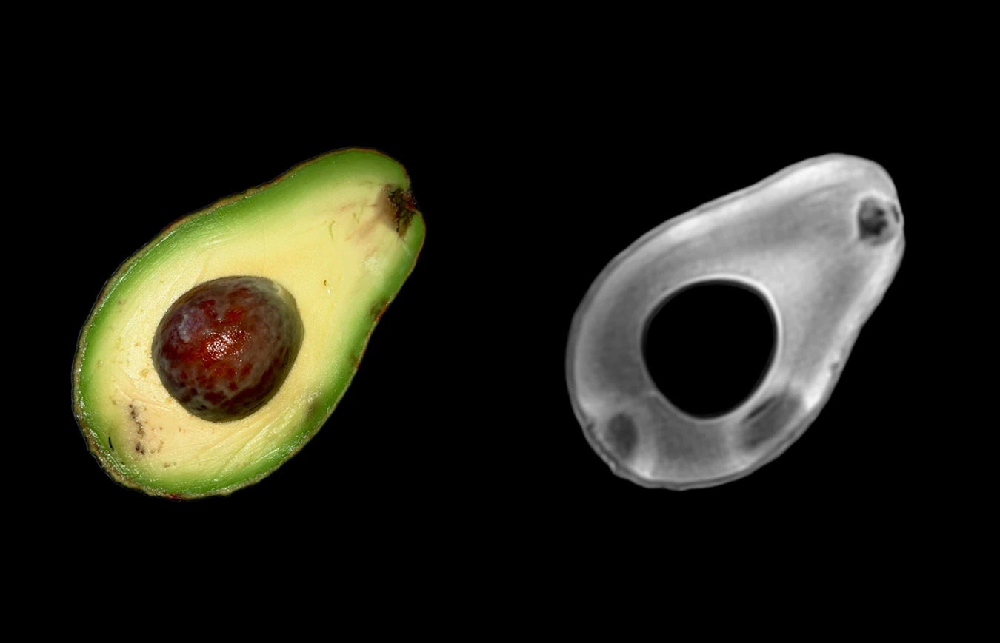
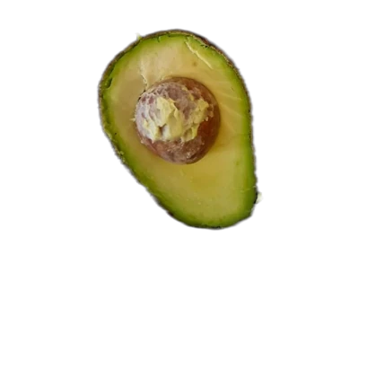
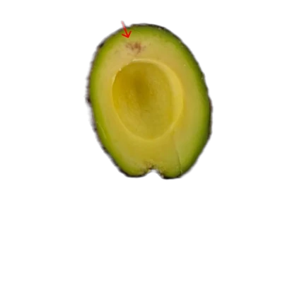
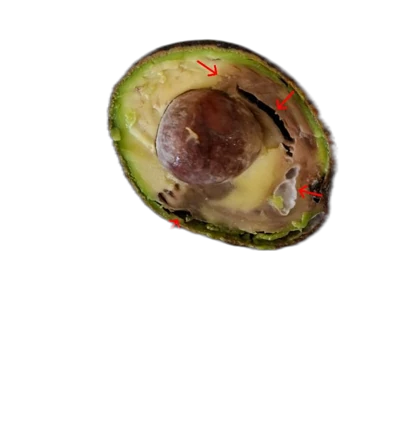
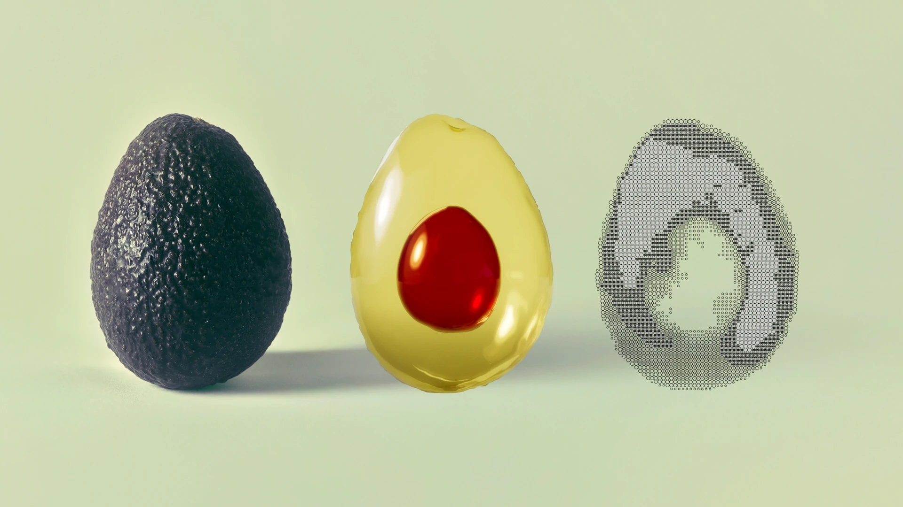

01 / RIPENING
Inform your ripening decisions
Use dry matter measurements in green fruit to understand maturity and inform how you manage each lot.
For avocado growers, packers & ripeners
Genus Echo combines MRI and AI to reveal internal quality without cutting the fruit. Get the insight to grade with confidence and make more informed ripening and shipping decisions.
A conversation built around your fruit, your workflow and your quality goals.

The decisions that matter
Turn internal-quality information into practical decisions, from grading individual avocados to planning what happens next.
Use dry matter measurements in green fruit to understand maturity and inform how you manage each lot.
Reveal internal damage and discoloration that surface inspection cannot show. Assess the flesh, including the area around the seed.
Use configurable grades to distinguish acceptable fruit from fruit that needs a different route, according to your specifications.
Internal quality, made visible
MRI creates an internal image of the fruit. AI translates that image into quality information you can act on, while the avocado remains intact.
From internal bruising and body rot to stem-end rot, vascular browning and gray pulp: see what is happening beneath the skin.
Explore example quality gradesReveal rot, bruising and discoloration within the flesh.
Measure dry matter in green avocados to support ripening decisions.
Translate internal quality into classes built around your requirements.
Your fruit. Your quality standards.
Set the thresholds that matter to your operation. Genus Echo supports multiple, customizable quality classes, so your internal-quality data can guide how you sort.



Illustrative quality classes from Orbem's avocado introduction. Final thresholds are configured and validated for your fruit and requirements.
Built around your operation
Start where the information can change an action. Together, we identify the inspection point that fits your fruit, handling process and quality goals.
Measure dry matter in green fruit and assess internal condition at your intended inspection stage.
Where fruit is already being handled individually, use internal-quality information to guide grading, regrouping and shipping decisions.
Scanning is part of the full process. Your assessment covers feeding, gentle handling, sorting and packing, alongside the scanner. We validate the application at your actual inspection stage.
MRI, rethought for food
Orbem brings automated MRI and AI together for industrial food production. Each scan turns internal structure into a digital view of the fruit and information for your quality decisions.

Capture the inside without cutting.
Translate the scan into internal-quality information.
Apply your grades and inform the next decision.
The value for your operation
Build a business case around the decisions you can improve and the value you can measure.
Gain internal-quality information without cutting open each avocado you inspect.
Identify fruit outside your quality specification at the validated inspection point, before its next destination.
Use more detailed quality information to guide allocation and make the most of acceptable fruit.
Your fruit is the starting point.
Bring your target defects, fruit origins and current workflow. We'll explore the right application, the integration requirements and the value to validate.
Your questions, answered
No. MRI inspection is non-destructive. The fruit remains intact as its internal structure is imaged.
Internal-quality applications include body rot, internal bruising, stem-end rot, vascular browning and gray pulp, plus dry matter measurement in green fruit. We confirm the relevant capabilities for your origins, fruit condition and inspection stage during the assessment.
Yes. Genus Echo supports multiple, customizable quality classes. We work with your team to define the criteria that matter to your operation and validate them on your fruit.
Dry matter provides maturity information that can support ripening decisions. It is distinct from a direct ripeness measurement. We assess how it can be used alongside your current ripening practices.
Individual avocados need to pass through the scanner. If your fruit is already boxed, the process must account for unpacking and repacking. We evaluate the complete handling flow and where scanning can fit.
Detection of an existing internal condition is different from predicting a future defect. We validate what is detectable at your intended inspection stage, including when working with green fruit.
We discuss your fruit, target defects, current quality process and line requirements. Together, we identify a relevant inspection point and the evidence needed to assess technical fit and the business case.
See what's possible
Discover what internal-quality information could change for your avocado operation.